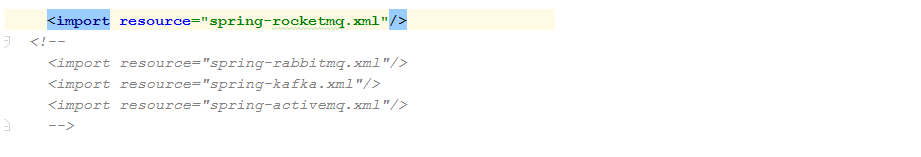
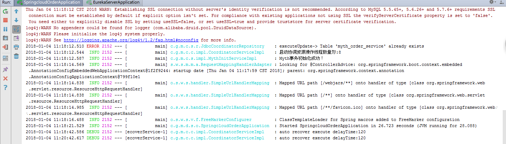

Myth源码解析系列之（五）- 服务启动源码解析
通过前面几篇文章，我们搭建了环境，也进行了分布式事务服务的体验，相信大家对myth也有了一个大体直观的了解，接下来我们将正式步入源码解析之旅~~
order服务启动源码解析（myth-demo-springcloud 为例, 分布式事务消息持久化：db方式, mq： rocketmq ）
因为我们demo场景是下单，所以我们首先来看订单项目工程( myth-demo-springcloud-order)，第一步先找到程序入口，我们框架是基于spring，很自然我们会想到applicationContext.xml，请看一下配置，相信大家还有印象~
<!--开启扫描Myth分布式框架包--> <context:component-scan base-package="com.github.myth.*"/> <!--开启动态代理--> <aop:aspectj-autoproxy expose-proxy="true"/> <!--配置启动类--> <bean id="mythTransactionBootstrap" class="com.github.myth.core.bootstrap.MythTransactionBootstrap"> <property name="repositorySuffix" value="order-service"/> <property name="serializer" value="kryo"/> <property name="coordinatorQueueMax" value="5000"/> <property name="coordinatorThreadMax" value="8"/> <property name="rejectPolicy" value="Abort"/> <property name="blockingQueueType" value="Linked"/> <property name="needRecover" value="true"/> <property name="scheduledDelay" value="120"/> <property name="scheduledThreadMax" value="4"/> <property name="recoverDelayTime" value="120"/> <property name="retryMax" value="30"/> <property name="repositorySupport" value="db"/> <property name="mythDbConfig"> <bean class="com.github.myth.common.config.MythDbConfig"> <property name="url" value="jdbc:mysql://127.0.0.1:3306/myth?useUnicode=true&characterEncoding=utf8"/> <property name="driverClassName" value="com.mysql.jdbc.Driver"/> <property name="password" value="123456"/> <property name="username" value="root"/> </bean> </property> </bean>
通过以上配置我们知道首先需要开启Aop切面，再扫描框架的包，重点我们来关注 MythTransactionBootstrap
MythTransactionBootstrap 源码解析
我们先来看看序列图，从图中我们得知主要涉及MythTransactionBootstrap 、MythInitServiceImpl、CoordinatorServiceImpl 三个类，后面我们逐步来走
MythTransactionBootstrap 简单类图

废话不多说，直接上菜（精品四菜一汤O(∩_∩)O哈哈~）：
@Component public class MythTransactionBootstrap extends MythConfig implements ApplicationContextAware { private final MythInitService mythInitService; @Autowired public MythTransactionBootstrap(MythInitService mythInitService) { this.mythInitService = mythInitService; } @Override public void setApplicationContext(ApplicationContext applicationContext) throws BeansException { SpringBeanUtils.getInstance().setCfgContext((ConfigurableApplicationContext) applicationContext); start(this); } private void start(MythConfig tccConfig) { mythInitService.initialization(tccConfig); } }
我们发现MythTransactionBootstrap继承 MythConfig, 所以能获取在xml配置的属性信息，它还实现了 ApplicationContextAware接口， 因此当spring容器初始化的时候，会自动的将ApplicationContext注入进来
我们继续跟踪，进入mythInitService.initialization方法
/** * Myth分布式事务初始化方法 * * @param mythConfig TCC配置 */ @Override public void initialization(MythConfig mythConfig) { Runtime.getRuntime().addShutdownHook(new Thread(() -> LOGGER.error("系统关闭"))); try { loadSpiSupport(mythConfig); coordinatorService.start(mythConfig); } catch (Exception ex) { LogUtil.error(LOGGER, "Myth事务初始化异常:{}", ex::getMessage); //非正常关闭 System.exit(1); } LogUtil.info(LOGGER, () -> "Myth事务初始化成功！"); }
根据注释我们知道，这里主要进行相关初始化操作，代码比较简洁，里面主要包含两个方法，我们先来看第一个loadSpiSupport(mythConfig), LoadSpiSupport 中主要采用jdk自带的spi加载机制，spi机制很常见，比如开源框架spring， 阿里的HSF，dubbo等开源框架都有使用该机制，如果有不明白的小伙伴，可以自行google
spi 实现的相关类
在LoadSpiSupport方法里其实主要通过spi机制做了几件事：
- 加载注入分布式事务消息的序列化方式
<property name="serializer" value="kryo"/><!-- 这里默认是 kryo --> //关键代码如下 //加载完后的serializer，进行设置并入住到spring上下文中 serializer.ifPresent(coordinatorService::setSerializer); serializer.ifPresent(s-> SpringBeanUtils.getInstance().registerBean(ObjectSerializer.class.getName(), s));
- 加载注入分布式事务消息的持久化方式
<property name="repositorySupport" value="db"/><!-- 这里默认是 db --> //关键代码如下 //将CoordinatorRepository实现注入到spring容器中 repositoryOptional.ifPresent(repository -> { serializer.ifPresent(repository::setSerializer); SpringBeanUtils.getInstance().registerBean(CoordinatorRepository.class.getName(), repository); });
在这里我们就可以发现spi的好处，可以在不改任何代码的情况下，只需做少许配置就可以灵活设置自己想要的序列化及持久化方式~~ 有木有~~
接下来我们来看第二个方法，coordinatorService.start(mythConfig)
/** * 保存本地事务日志 * * @param mythConfig 配置信息 * @throws MythException 异常 */ @Override public void start(MythConfig mythConfig) throws MythException { this.mythConfig = mythConfig; //在前面我们已经做了注入操作，注入对象为JdbcCoordinatorRepository coordinatorRepository = SpringBeanUtils.getInstance().getBean(CoordinatorRepository.class); // 根据配置我们这里的值为：order-service final String repositorySuffix = buildRepositorySuffix(mythConfig.getRepositorySuffix()); //初始化spi 协调资源存储 coordinatorRepository.init(repositorySuffix, mythConfig); //初始化 协调资源线程池 initCoordinatorPool(); //如果需要自动恢复 开启线程 调度线程池，进行恢复 if (mythConfig.getNeedRecover()) { scheduledAutoRecover(); } }
紧接着我们进入，JdbcCoordinatorRepository.init(repositorySuffix, mythConfig), 详见代码
/** * 初始化操作 * * @param modelName 模块名称 * @param mythConfig 配置信息 */ @Override public void init(String modelName, MythConfig mythConfig) { dataSource = new DruidDataSource(); final MythDbConfig tccDbConfig = mythConfig.getMythDbConfig(); dataSource.setUrl(tccDbConfig.getUrl()); dataSource.setDriverClassName(tccDbConfig.getDriverClassName()); dataSource.setUsername(tccDbConfig.getUsername()); dataSource.setPassword(tccDbConfig.getPassword()); dataSource.setInitialSize(tccDbConfig.getInitialSize()); dataSource.setMaxActive(tccDbConfig.getMaxActive()); dataSource.setMinIdle(tccDbConfig.getMinIdle()); dataSource.setMaxWait(tccDbConfig.getMaxWait()); dataSource.setValidationQuery(tccDbConfig.getValidationQuery()); dataSource.setTestOnBorrow(tccDbConfig.getTestOnBorrow()); dataSource.setTestOnReturn(tccDbConfig.getTestOnReturn()); dataSource.setTestWhileIdle(tccDbConfig.getTestWhileIdle()); dataSource.setPoolPreparedStatements(tccDbConfig.getPoolPreparedStatements()); dataSource.setMaxPoolPreparedStatementPerConnectionSize(tccDbConfig.getMaxPoolPreparedStatementPerConnectionSize()); this.tableName = RepositoryPathUtils.buildDbTableName(modelName); executeUpdate(SqlHelper.buildCreateTableSql(tccDbConfig.getDriverClassName(), tableName)); }
这里主要初始化数据源，然后创建order服务对应的一张分布式事务消息表，用来存储分布式事务消息，走完代码我们会创建一张表：myth_order_service。
到此init代码已走完， 接下来我们来看 initCoordinatorPool()
private void initCoordinatorPool() { synchronized (LOGGER) { QUEUE = new LinkedBlockingQueue<>(mythConfig.getCoordinatorQueueMax()); final int coordinatorThreadMax = mythConfig.getCoordinatorThreadMax(); final MythTransactionThreadPool threadPool = SpringBeanUtils.getInstance().getBean(MythTransactionThreadPool.class); final ExecutorService executorService = threadPool.newCustomFixedThreadPool(coordinatorThreadMax); LogUtil.info(LOGGER, "启动协调资源操作线程数量为:{}", () -> coordinatorThreadMax); for (int i = 0; i < coordinatorThreadMax; i++) { executorService.execute(new Worker()); } } } /** * 线程执行器 */ class Worker implements Runnable { @Override public void run() { execute(); } private void execute() { while (true) { try { final CoordinatorAction coordinatorAction = QUEUE.take(); if (coordinatorAction != null) { final int code = coordinatorAction.getAction().getCode(); if (CoordinatorActionEnum.SAVE.getCode() == code) { save(coordinatorAction.getMythTransaction()); } else if (CoordinatorActionEnum.DELETE.getCode() == code) { remove(coordinatorAction.getMythTransaction().getTransId()); } else if (CoordinatorActionEnum.UPDATE.getCode() == code) { update(coordinatorAction.getMythTransaction()); } } } catch (Exception e) { e.printStackTrace(); LogUtil.error(LOGGER, "执行协调命令失败：{}", e::getMessage); } } } }
这个方法里首先初始化一个LinkedBlockingQueue队列QUEUE，该队列作用主要用于存放分布式消息内容，其次创建了一个线程池，线程池中执行的任务Worker,主要消费QUEUE队列消息进行分布式消息的持久化操作，细心的童鞋发现这里用到了命令模式，我们这里的持久化为mysql。
下一步我们来看 scheduledAutoRecover()方法
new ScheduledThreadPoolExecutor(1, MythTransactionThreadFactory.create("MythAutoRecoverService", true)) .scheduleWithFixedDelay(() -> { LogUtil.debug(LOGGER, "auto recover execute delayTime:{}", () -> mythConfig.getScheduledDelay()); try { final List<MythTransaction> mythTransactionList = coordinatorRepository.listAllByDelay(acquireData()); if (CollectionUtils.isNotEmpty(mythTransactionList)) { mythTransactionList .forEach(mythTransaction -> { final Boolean success = sendMessage(mythTransaction); //发送成功 ，更改状态 if (success) { coordinatorRepository.updateStatus(mythTransaction.getTransId(), MythStatusEnum.COMMIT.getCode()); } }); } } catch (Exception e) { e.printStackTrace(); } }, 30, mythConfig.getScheduledDelay(), TimeUnit.SECONDS);
前面我们创建了一个线程池进行分布式消息的持久化操作，这里就是如何使用这些数据，创建一个调度线程，定时取出指定有效时间范围内且消息状态为开始的数据，然后再往mq中投递消息，注意这里有个开关needRecover， 根据注释得知只需要在事务发起方我们才需要开启，默认关闭状态，我们这里是order服务，即为事务发起方，所以需要开启
<property name="needRecover" value="true"/>
最后我们再来看下mq消息发送部分，通过applicationContext.xml，我们发现我们只放开了rocketmq的声明，固我们消息发送使用的是rocketmq

到此我们order服务启动源码部分已走完，启动成功后控制台输出内容：

account ，inventory服务启动源码解析
account ，inventory 启动流程与order服务大体相似，主要有以下区别
- account 创建分布式消息表名为： myth_account_service；inventory 创建分布式消息表名为： myth_inventory_service
- needRecover开关这里为关闭，不需要开启调度线程
好了，这一章我们完成了服务启动的源码解析，后面我们将进入下单流程部分，感觉怎么样 很简单有木有 是不是你的菜 O(∩_∩)O~
大家有任何问题或者建议欢迎沟通 ，欢迎加入QQ群：162614487 进行交流